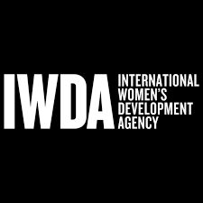
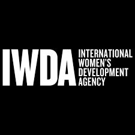

Our Story
SIS is a non-profit organisation established in 2024 that advocates for the constitutional rights of women and children in South Africa. SIS educates, advocates, and campaigns on Gender-Based Violence & Femicide (GBVF), Human Rights, and Gender Equality daily. The idea for Strength in Solidarity was born out of a simple yet profound vision: to build a community where women could come together, support one another, and advocate for change. Drawing inspiration from their own experiences and the stories of countless women they had met along the way, the trio set out to create a safe space where women could find strength in unity.Strength in Solidarity officially launched in the heart of Pretoria, with a small but dedicated team of volunteers joining forces to support the cause. Through a series of workshops, events, and outreach programs, the organization began to make its mark, empowering women from all walks of life to raise their voices and demand change.
As the movement grew, so too did its impact. Strength in Solidarity became a powerful force for change, advocating for policy reform, providing support to survivors of gender-based violence, and championing the rights of women and girls in every aspect of society.
Today, Strength in Solidarity stands as a beacon of hope and resilience in South Africa, inspiring women to stand tall, speak out, and support one another in the fight for equality and justice. Keatlegile, Rorisang, and Lethabo's vision has become a reality, proving that when women come together in solidarity, there is no limit to what they can achieve.
 
